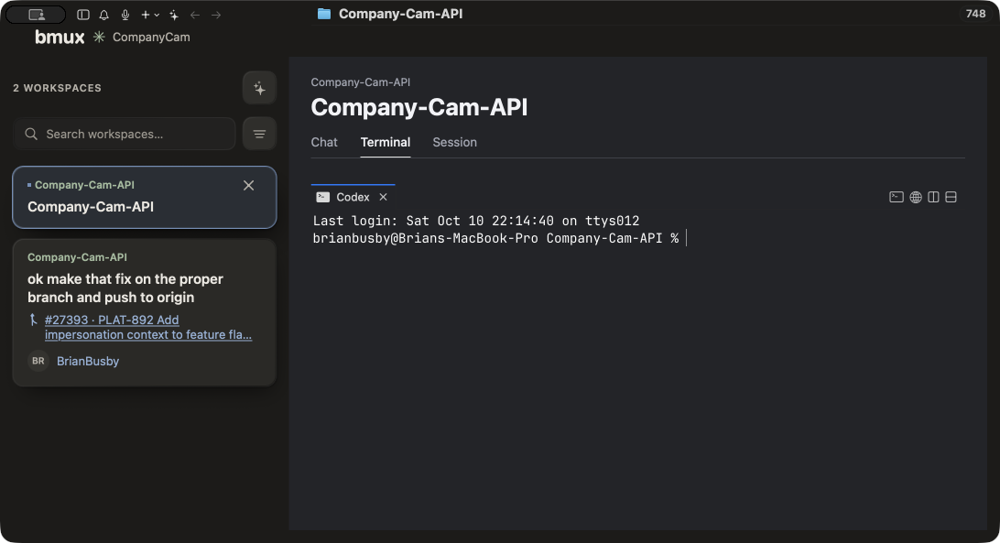
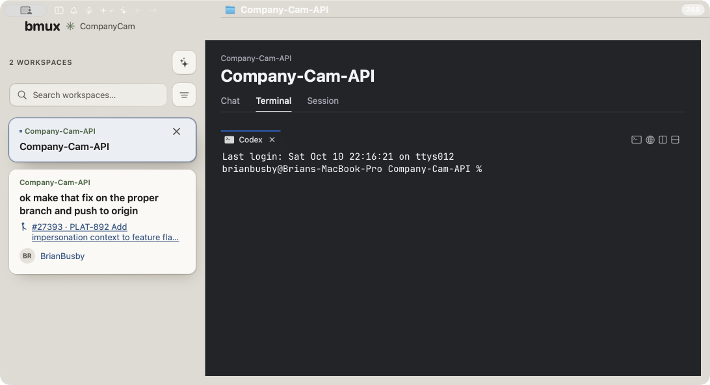

Sidebar cards, search, filter and count consume the matte tokens. Main panel, navigation, terminal chrome and final header alignment remain stage 4. Texture is off. These images are stage evidence, not a claim of whole-app parity.
Scroll horizontally for side-by-side comparison at 1:1 points. See the implementation record for verification and deviations.


